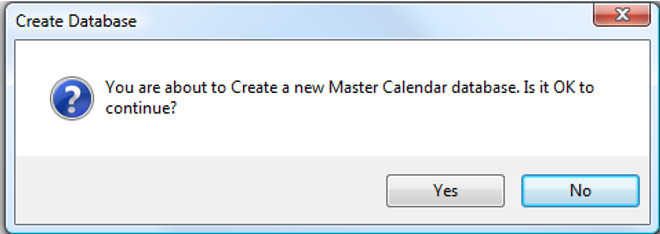

Run the Master Calendar Installer
Process Overview:
In order to install Master Calendar, you will:
- Run the DEA.MasterCalendar.Server.Install.exe to install the Master Calendar Database on the database server (following the steps below).
- Run the DEAMasterCalendarSetup.msi program on the web server to install the Master Calendar website.
- Configure Master Calendar to use the Web Service.
- (optional) Verify the Master Calendar API.
- (If Upgrading) Uninstall any optional services on the web server used by the previous version of Master Calendar.
- Install or re-install any optional services on the web server.
Note: Be sure to run a backup prior to upgrading your database. It is recommended to upgrade your Master Calendar Database in a test environment prior to upgrading a production database.
- Run DEA.MasterCalendar.Server.Install.exe from any PC that has access to the database server.

- In the Server field, enter the name of the server running MS SQL Server.
- In the Database field, enter the name for the Master Calendar Database. (It is recommended that you accept the default value of ‘Master_Calendar’).
- In the Server Authentication area, specify MS SQL Server authentication credentials. If SQL Server Authentication Mode is selected, you must specify a User Name and Password.
- Click the Execute button.

- Click Yes to initiate the installation.